The Pacific Northwest Barber Lounge.
Top-tier shear and clipper work meets a relaxed, modern atmosphere right in the heart of Walla Walla. Step in, grab a complimentary drink, and elevate your standard. Walk-ins always welcome.
Explore Our ServicesPassion. Discipline. Execution.
This is the standard for every cut, fade, and shave. We bring an uncompromising approach to hair chemistry and traditional barbering, ensuring every detail is executed flawlessly.
Precision Cuts & Tapered Finishes
Good hair design is built on precision and consistency. Our team is dedicated to delivering clean, top-tier haircuts across a broad range of styles. Backed by a deep understanding of hair chemistry and structure, we know exactly how to manage difficult hair—whether it's curly, wavy, or thick. We focus heavily on precise clipper work, seamless tapers, and proper texturizing. Whether you want a sharp, modern fade or a timeless, disciplined classic, our goal is always a flawless execution.
The Traditional Experience
We never lose sight of traditional barbering. Beyond the clippers, we offer the staples that make a barbershop great: signature hot towel treatments, smooth straight-razor shaves, and hot steaming men's facials. It's a disciplined process meant to help you reset and refine your look, combating the local hard water and dry climate.
The Pacific Northwest Lounge
A sharp cut gets you in the chair, but the lounge is what brings you back. We’ve built a comfortable, peaceful reception area right on Birch St designed for more than just waiting. Feel free to arrive early to escape the house—jump on our free Wi-Fi to knock out some work or finish a project, and grab a complimentary snack or drink. Whether you're an appointment regular or a walk-in, our lounge is the perfect place to kick back, breathe, and relax before you even hit the barber chair.
Our Work
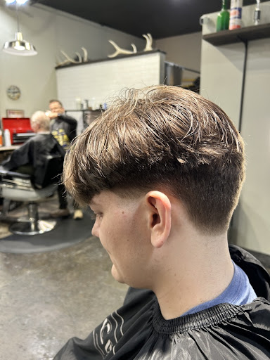
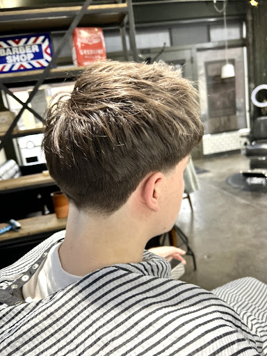
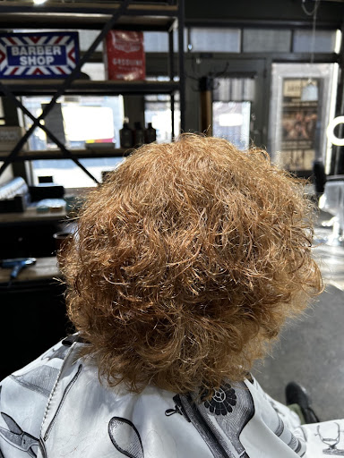
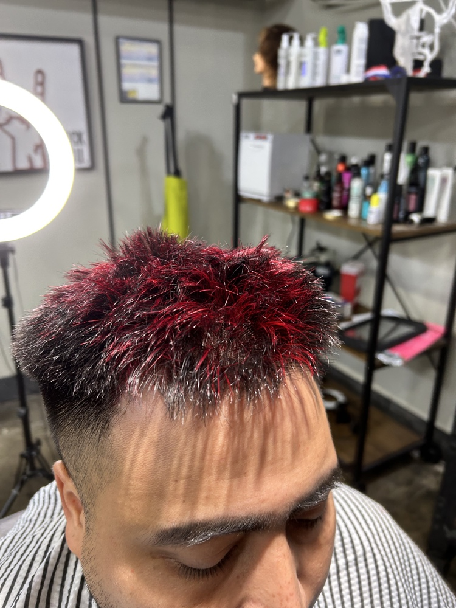
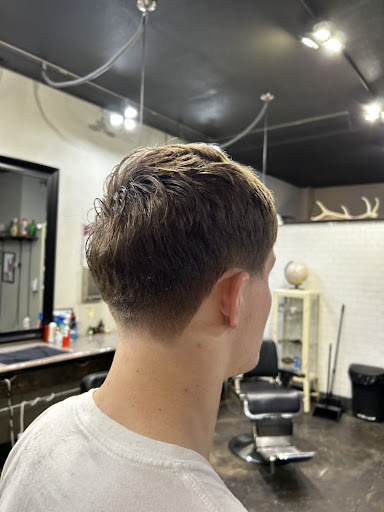
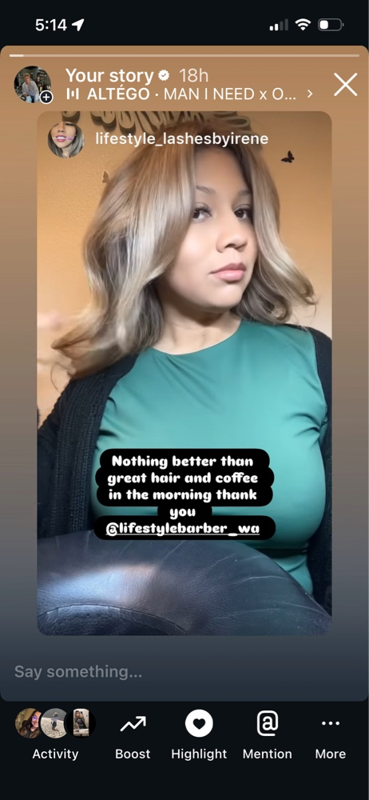
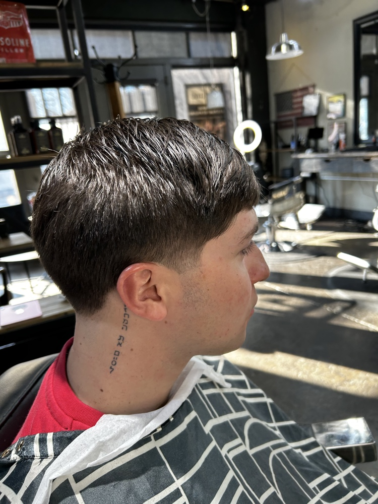
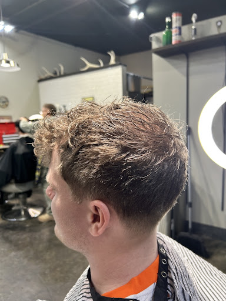
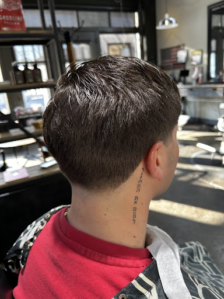
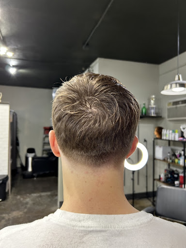
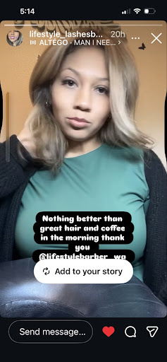
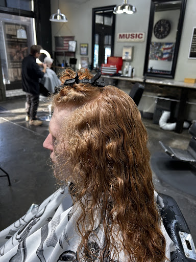
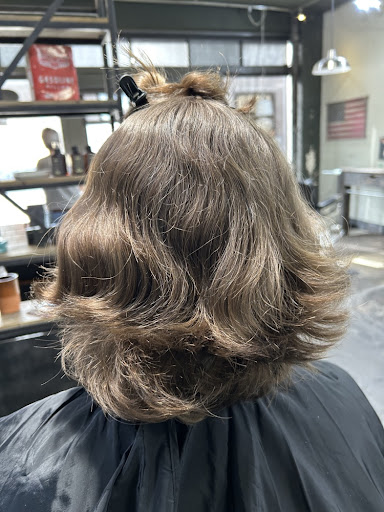
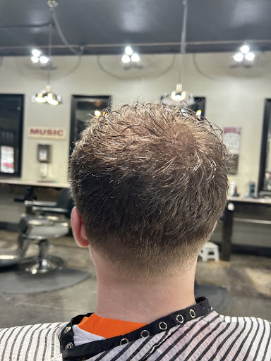
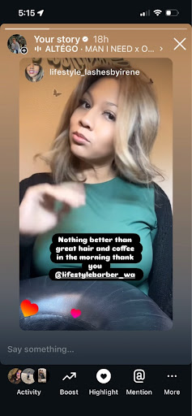
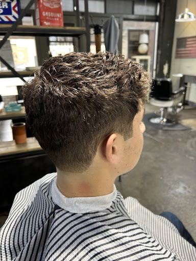
Find The Lounge
120 E Birch St, Suite 7
Walla Walla, WA 99362
Phone: (509) 876-0400
Calls always welcomed and answered. Reach out for availability or to leave a message.
Email: lifestylebarberwa@gmail.com
Lounge Hours:
Monday – Saturday: 9:00 AM – 4:00 PM
Sunday: Closed
Appointments preferred. Walk-ins welcome.
Book your chair. Experience the execution.